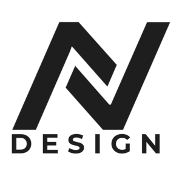

Meu nome é Danillo Antonio e trabalho como designer a pouco mais de 2 anos, comecei realizando pequenos projetos, eu desde pequeno sempre fui muito interessado em edição de vídeo e design. Então nesse ano eu decidi evoluir meu nível profissional e dar mais um passo na carreira. Dentre meus trabalhos faço desde intros para canais no Youtube a GFX com personagens 3d, a cada dia tento inovar mais o meu conhecimento e aprender coisas novas.